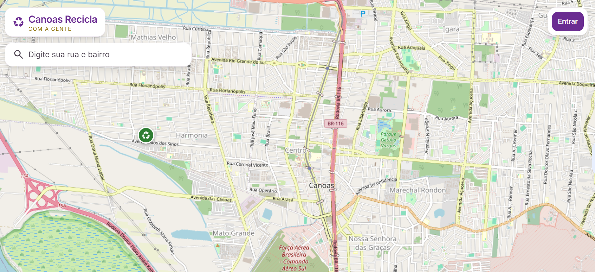

Juntos por uma Canoas mais sustentável.
O Canoas Recicla com a Gente é um aplicativo em desenvolvimento que aproxima você dos pontos de coleta, mostra as rotas da coleta seletiva e valoriza o trabalho das cooperativas de Canoas.
Acompanhe uma rota da coleta seletiva
Veja como o aplicativo pode mostrar o caminho da coleta e os pontos de entrega em Canoas.
- Caminhão em percurso
- Pontos de coleta
- Rota da coleta
Rotas da coleta
Acompanhe o caminho da coleta seletiva e entenda como funciona.
Pontos de coleta
Encontre os locais mais próximos para descartar seus materiais recicláveis.
Cooperativas
Conheça as cooperativas de Canoas e o impacto do seu trabalho.
Educação ambiental
Acesse dicas e informações para separar e descartar corretamente.

Conectando pessoas, rotas e oportunidades.
O Canoas Recicla com a Gente está em desenvolvimento para facilitar o acesso às informações da coleta seletiva e fortalecer a reciclagem na cidade.
Faça parte dessa iniciativa!
O Canoas Recicla com a Gente em breve estará disponível. Acompanhe o desenvolvimento e ajude a construir uma Canoas mais sustentável.